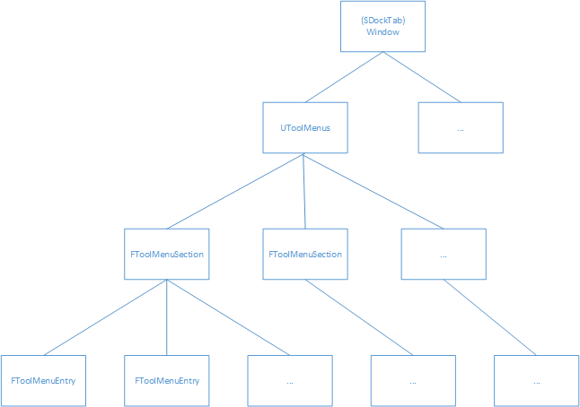
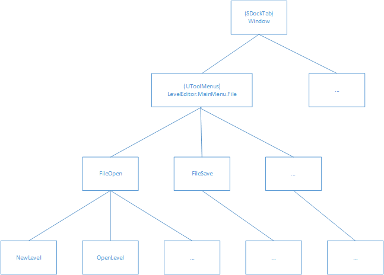
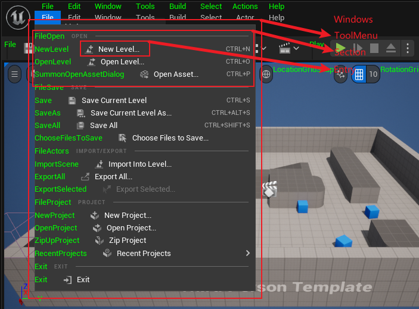
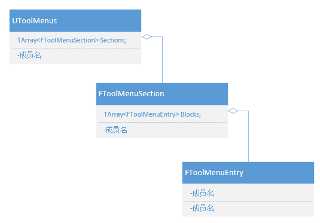

# 一、前言
- 在读这篇文章之前，希望你已经阅读过 UE5 编辑器扩展 （入门篇）
# 二、Slate
- Slate 是虚幻引擎的 UI 架构，所以想要修改现有的编辑器 UI 结构或者添加新的编辑器 UI 功能等等，都绕不开它！
- 幸运的是虚幻引擎开源且官方文档逐渐完善，你可以通过官方文档和引擎源码学习 Slate 的使用。
- 虚幻官方文档：虚幻官方文档 - Slate
# 三、编辑器 UI “拼接” 设计结构
- 编辑器使用 树状结构 来拼接 UI 层级关系。
例子：

树状结构
- 根节点：Window
- 容器（非叶节点、非根节点）：ToolMenuSection
- 叶子节点：ToolMenuEntry
如何构成树状结构？
- 名字的构成（字符串 + 点）
- 每层都有一个专属的名字，父层和子层用点号分隔，效果如下所示：
- LevelEditor.MainMenu.File.FileOpen.NewLevel
- LevelEditor.MainMenu.File.FileOpen.OpenLevel
- LevelEditor.MainMenu.File.FileSave.Save
- LevelEditor.MainMenu.File.Edit
- 代码的构成
- 其实就是数组 TArray 构成的代码层级结构

- 其实就是数组 TArray 构成的代码层级结构
- 虚幻引擎的 GamePlayTag 和 自动化测试 的层级关系也是靠这种方法实现的！